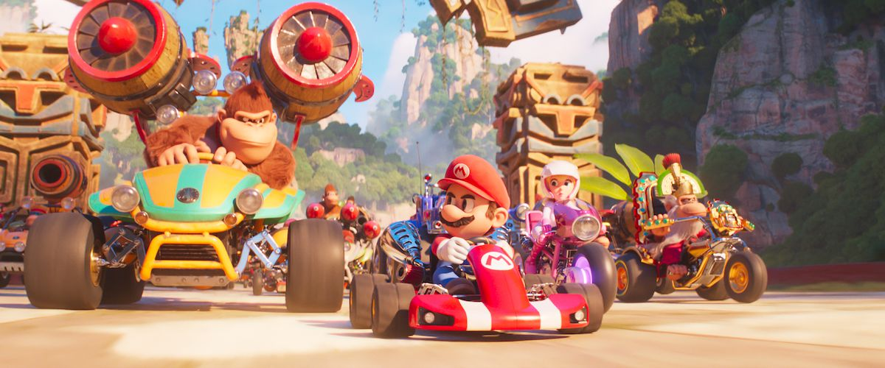

De Super Mario Bros. movie wordt geregisseerd door Aaron Horvath en Michael Jelenic, met een scenario van Matthew
Fogel. De stemacteurs zijn onder andere Chris Pratt als Mario, Charlie Day als Luigi en andere getalenteerde acteurs die
de geliefde personages tot leven brengen. De productiekwaliteit en animatie van de film helpen de kijker in de verhaallijn te trekken, dit maakt de film een heldere en visueel opwindende ervaring.
De film is een moderne en computergebaseerde animatiefilm die een origineel verhaal vertelt over de oorsprong van de
Mario-broers. Het verhaal is geïnspireerd door de populaire videospellen uit de jaren '80 en '90. De film is
geproduceerd door Illumination, Nintendo en Universal Pictures en is geregisseerd door Aaron Horvath en Michael Jelenic.
De stemacteurs in de film zijn onder andere Chris Pratt als Mario, Charlie Day als Luigi en een andere bekende acteur
als Bowser.
De Super Mario Bros. movie is een nostalgische en verhalende film die een moderne en computergebaseerde animatiefilm is.
Het verhaal gaat over de oorsprong van de Mario-broers en hun avonturen in een magische wereld. De film is geproduceerd
door Illumination, Nintendo en Universal Pictures en is geregisseerd door Aaron Horvath en Michael Jelenic. De
stemacteurs in de film zijn onder andere Chris Pratt als Mario, Charlie Day als Luigi en een andere bekende acteur als
Bowser.
Review van de site-writer

"The Super Mario Bros. Movie" opent in Brooklyn met de loodgieters Mario en zijn broer Luigi die proberen hun nieuwe bedrijf van de grond te krijgen. Een aantal Nintendo-easter eggs op de achtergrond van deze eerste scènes zou een kleine glimlach moeten opwekken bij mensen van mijn generatie, en er is een beetje inspiratie op structureel gebied, zoals een slim vroeg shot waarin Mario en Luigi door de stad racen op een zijwaarts scrollende manier die de eerdere games nabootst. Er is ook een knipoog naar The Odyssey op een boekenplank in Mario's kamer, wat suggereert dat we op het punt staan een heldenreis te gaan bekijken en een verwijzing naar de ongelooflijke Switch-game.
Op een onlogische manier vinden Mario en Luigi een enorme buizenkamer onder Brooklyn, worden erin gezogen en belanden in
het Mushroom Kingdom, dat wordt bedreigd door de schurkachtige Bowser. De beruchte slechterik heeft de Super Star gevonden die hij nodig heeft voor zijn laatste aanval op Princess Peach en de bewoners van haar koninkrijk, waaronder Toad. Bowser wil niet alleen macht, hij wil ook van de prinses zijn bruid maken en zingt een paar ongeïnspireerde liedjes over zijn liefde voor haar. Hoe het in hemelsnaam mogelijk is dat een film als deze een rocktalent als de helft van Tenacious D heeft en hem niet een paar slimme Bowser-liedjes laat zingen, is een van de vele mysteries van deze film.
Hoewel Luigi in de pijp terechtkomt die hem meteen in de donkere landen dropt en hem Bowsers gevangene maakt - een
domme beslissing die hem een uur aan de kant zet - ontmoet Mario Princess Peach, die hem kennis laat maken met
power-ups. En zo krijgen alle blokjes met vraagtekens de kans om te schitteren terwijl Mario groeit, krimpt en zelfs in
een wasbeer verandert. Uiteindelijk rekruteren ze Donkey Kong, racen ze over Rainbow Road en redden ze de
dag. Dat is geen spoiler als je ooit een film hebt gezien.
Fans van deze film zullen van de daken schreeuwen dat het script voor iets met de naam "The Super Mario Bros. Movie"
geen sterk punt hoeft te zijn. En, om eerlijk te zijn, er zijn een paar sterke settings qua ontwerp. Ik heb genoten van
de keuzes die het team heeft gemaakt in de structuur van Donkey Kong Country, en de Rainbow Road "Super Mario Kart"
sequentie is goed geregisseerd. Maar ik vraag me af waarom fans van een franchise die al generaties lang zoveel liefde
oproept, genoegen moeten nemen met het absolute minimum aan verhaalvertelling.
Er zijn zo weinig echte beslissingen genomen bij het maken van deze film. Het is gewoon een verzameling visuele en
karakterreferenties die bij elkaar zijn geflanst tot een film van 92 minuten. Neem een risico. Doe gewoon iets. Wat dan
ook. Het zette me aan het denken over de leuke spin-offs die zouden kunnen bestaan, zoals een "Mad Max: Fury
Road"-versie van de "Mario Kart"-sequentie die energie haalt uit non-stop beweging. Of een versie die uitpakt zoals "The
LEGO Movie", maar die zich meer bewust is van zijn referenties en wereldopbouw - iets dat de speler zelfs integreert
zoals die film aan het einde doet. Ik zweer je dat bijna iedereen die een spel als "Odyssey" heeft gespeeld wel met iets
inventievers zou kunnen komen. Bijna elke tien minuten van dat spel is creatiever.
Het helpt ook niet dat het stemwerk uniform matig is. Chris Pratt kan charismatisch zijn met het juiste materiaal, maar
het klinkt alsof hij dit er in drie uur in een stemstudio heeft uitgeperst. Charlie Day heeft zo'n expressieve stem,
maar de film gebruikt hem nauwelijks. Seth Rogen is altijd een welkome verschijning en hij lijkt tenminste wat plezier
te hebben. Ik wou dat ik dat ook had gehad, als fan van het Mario genre kwam ik van een koude reis terug.
Met de nostalgiegekte die samenkomt met de macht van Nintendo en Illumination, voelt "The Super Mario Bros. Movie" zich
te groot om te mislukken. Dat betekent dat er een vervolg komt en ik verwacht weer een nieuwe cyclus van het debat
"critici vs. fans". Ik ben beide. En ik wil een wereld waarin de mensen die films maken voor een fanbase die zo
toegewijd is als deze, die fandom niet als vanzelfsprekend beschouwen. Dit is nog lang niet voorbij. Ik vermoed dat we
een heleboel films uit het NES-universum zullen krijgen, waaronder "Donkey Kong Country" en "The Legend of Zelda" (en
laten we "Kid Icarus" niet vergeten). Maar we hebben makers nodig die deze games niet alleen zien als producten om naar
te verwijzen, maar ook als fundamenten waarop nieuwe ideeën kunnen worden gebouwd. Dat kind uit de jaren 80 dat droomde
van Mario verdient het.